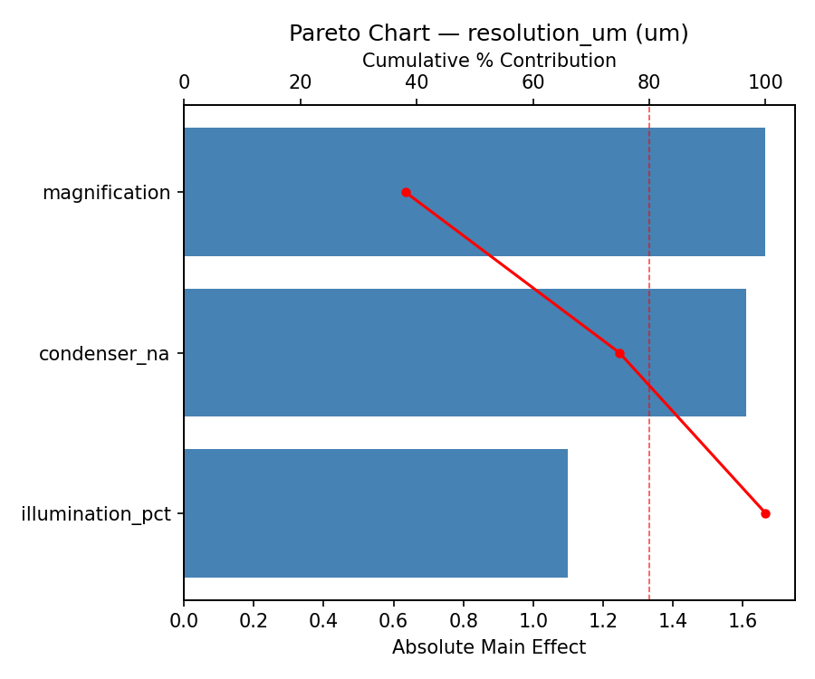
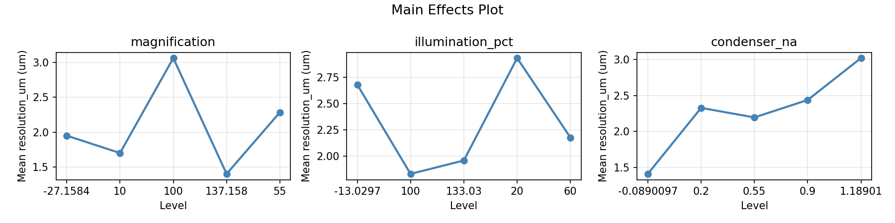
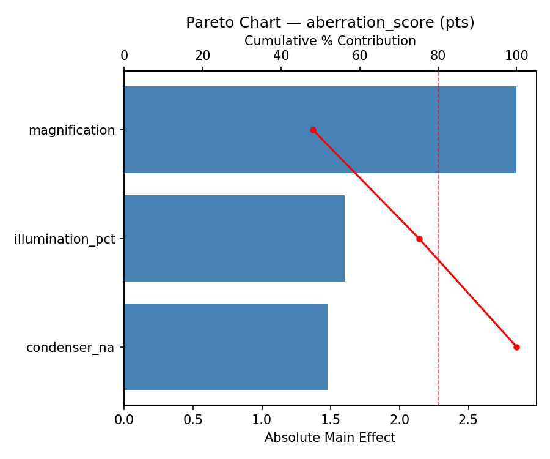
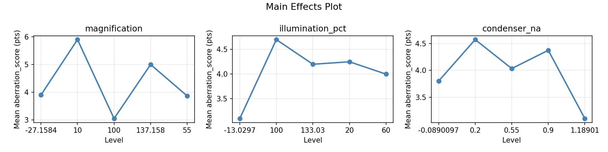
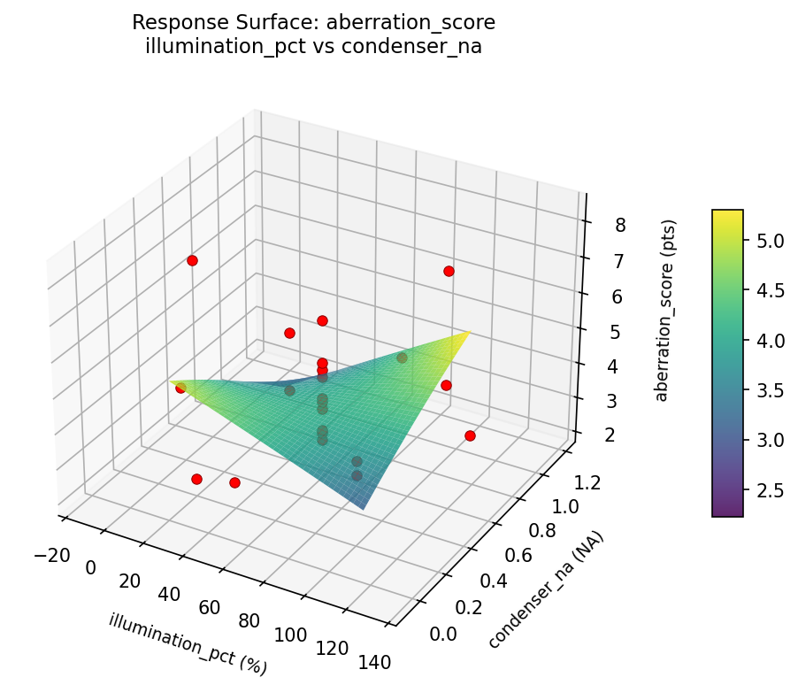
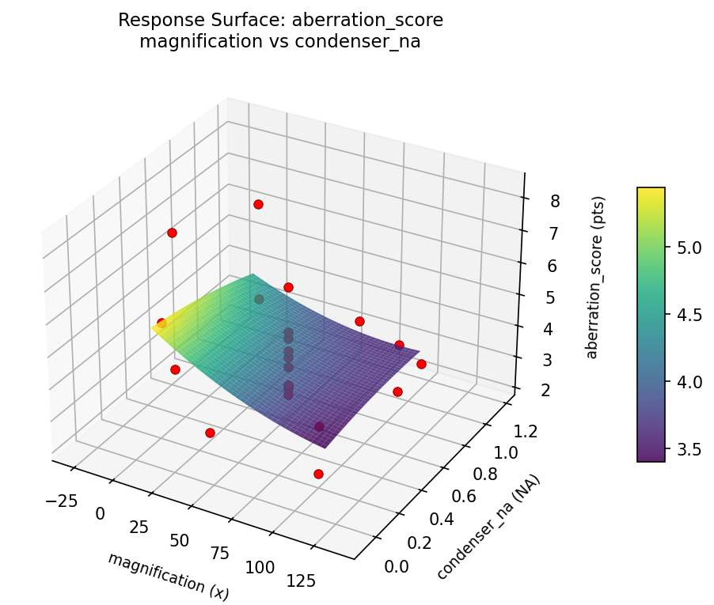
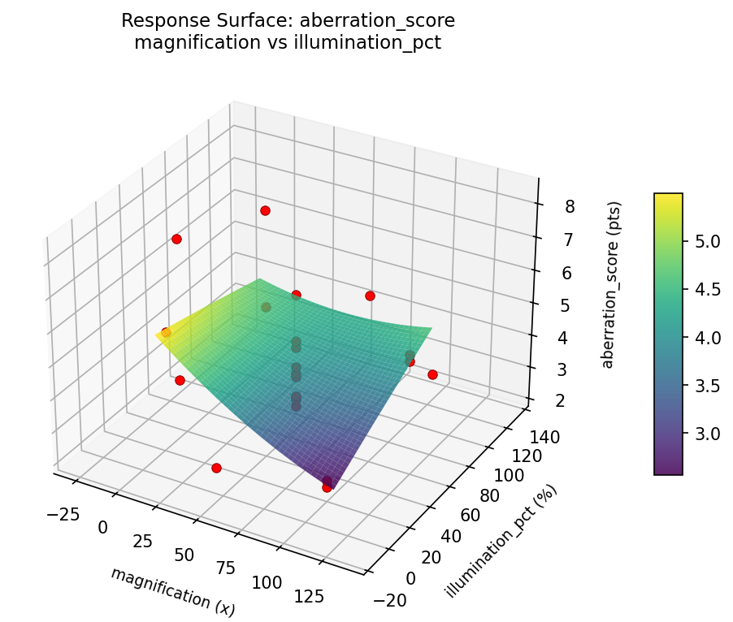
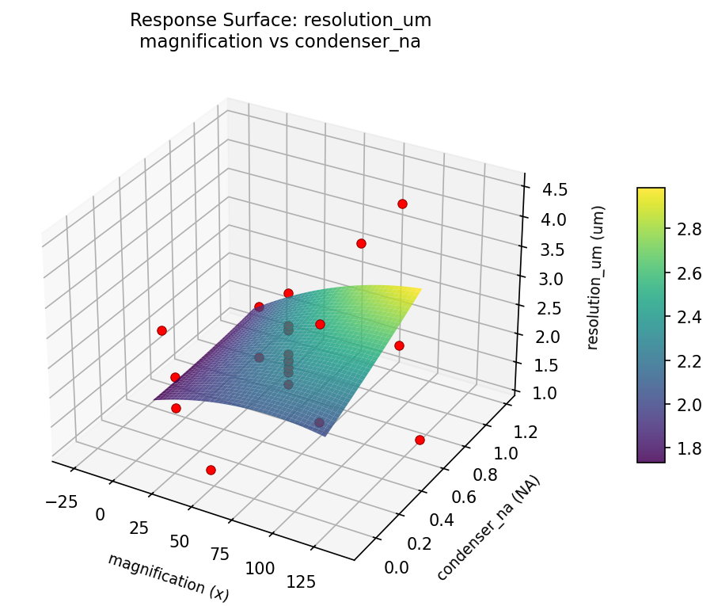

Experimental Setup
Factors
| Factor | Low | High | Unit |
|---|
magnification | 10 | 100 | x |
illumination_pct | 20 | 100 | % |
condenser_na | 0.2 | 0.9 | NA |
Fixed: specimen = stained_tissue, camera = cmos_sensor
Responses
| Response | Direction | Unit |
|---|
resolution_um | ↓ minimize | um |
aberration_score | ↓ minimize | pts |
Configuration
{
"metadata": {
"name": "Microscope Imaging Quality",
"description": "Central composite design to maximize resolution and minimize chromatic aberration by tuning objective magnification, illumination intensity, and condenser aperture"
},
"factors": [
{
"name": "magnification",
"levels": [
"10",
"100"
],
"type": "continuous",
"unit": "x"
},
{
"name": "illumination_pct",
"levels": [
"20",
"100"
],
"type": "continuous",
"unit": "%"
},
{
"name": "condenser_na",
"levels": [
"0.2",
"0.9"
],
"type": "continuous",
"unit": "NA"
}
],
"fixed_factors": {
"specimen": "stained_tissue",
"camera": "cmos_sensor"
},
"responses": [
{
"name": "resolution_um",
"optimize": "minimize",
"unit": "um"
},
{
"name": "aberration_score",
"optimize": "minimize",
"unit": "pts"
}
],
"settings": {
"operation": "central_composite",
"test_script": "use_cases/151_microscope_imaging/sim.sh"
}
}
Experimental Matrix
The Central Composite Design produces 22 runs. Each row is one experiment with specific factor settings.
| Run | magnification | illumination_pct | condenser_na |
|---|
| 1 | 55 | 60 | 0.55 |
| 2 | 100 | 20 | 0.9 |
| 3 | 10 | 100 | 0.2 |
| 4 | 55 | 133.03 | 0.55 |
| 5 | 55 | 60 | 0.55 |
| 6 | -27.1584 | 60 | 0.55 |
| 7 | 55 | 60 | -0.0890097 |
| 8 | 55 | 60 | 0.55 |
| 9 | 100 | 100 | 0.2 |
| 10 | 137.158 | 60 | 0.55 |
| 11 | 55 | 60 | 0.55 |
| 12 | 55 | -13.0297 | 0.55 |
| 13 | 55 | 60 | 0.55 |
| 14 | 10 | 20 | 0.9 |
| 15 | 55 | 60 | 0.55 |
| 16 | 100 | 20 | 0.2 |
| 17 | 55 | 60 | 1.18901 |
| 18 | 100 | 100 | 0.9 |
| 19 | 55 | 60 | 0.55 |
| 20 | 10 | 20 | 0.2 |
| 21 | 10 | 100 | 0.9 |
| 22 | 55 | 60 | 0.55 |
Step-by-Step Workflow
1
Preview the design
$ python doe.py info --config use_cases/151_microscope_imaging/config.json
2
Generate the runner script
$ python doe.py generate --config use_cases/151_microscope_imaging/config.json \
--output use_cases/151_microscope_imaging/results/run.sh --seed 42
3
Execute the experiments
$ bash use_cases/151_microscope_imaging/results/run.sh
4
Analyze results
$ python doe.py analyze --config use_cases/151_microscope_imaging/config.json
5
Get optimization recommendations
$ python doe.py optimize --config use_cases/151_microscope_imaging/config.json
6
Generate the HTML report
$ python doe.py report --config use_cases/151_microscope_imaging/config.json \
--output use_cases/151_microscope_imaging/results/report.html
Features Exercised
| Feature | Value |
|---|
| Design type | central_composite |
| Factor types | continuous (all 3) |
| Arg style | double-dash |
| Responses | 2 (resolution_um ↓, aberration_score ↓) |
| Total runs | 22 |
Analysis Results
Generated from actual experiment runs using the DOE Helper Tool.
Response: resolution_um
Top factors: magnification (38.1%), condenser_na (36.8%), illumination_pct (25.1%).
Pareto Chart

Main Effects Plot

Response: aberration_score
Top factors: magnification (48.1%), illumination_pct (27.0%), condenser_na (24.9%).
Pareto Chart

Main Effects Plot

Response Surface Plots
3D surfaces fitted with quadratic RSM. Red dots are observed data points.
aberration score illumination pct vs condenser na

aberration score magnification vs condenser na

aberration score magnification vs illumination pct

resolution um illumination pct vs condenser na

resolution um magnification vs condenser na

resolution um magnification vs illumination pct

Full Analysis Output
RSM surface: rsm_resolution_um_magnification_vs_illumination_pct.png
RSM surface: rsm_resolution_um_magnification_vs_condenser_na.png
RSM surface: rsm_resolution_um_illumination_pct_vs_condenser_na.png
RSM surface: rsm_aberration_score_magnification_vs_illumination_pct.png
RSM surface: rsm_aberration_score_magnification_vs_condenser_na.png
RSM surface: rsm_aberration_score_illumination_pct_vs_condenser_na.png
=== Main Effects: resolution_um ===
Factor Effect Std Error % Contribution
--------------------------------------------------------------
magnification 1.6650 0.1674 38.1%
condenser_na 1.6100 0.1674 36.8%
illumination_pct 1.1000 0.1674 25.1%
=== Summary Statistics: resolution_um ===
magnification:
Level N Mean Std Min Max
------------------------------------------------------------
-27.1584 1 1.9500 0.0000 1.9500 1.9500
10 4 1.7000 0.4398 1.1500 2.0600
100 4 3.0650 1.2057 2.0400 4.4700
137.158 1 1.4000 0.0000 1.4000 1.4000
55 12 2.2850 0.5485 1.4100 3.2300
illumination_pct:
Level N Mean Std Min Max
------------------------------------------------------------
-13.0297 1 2.6800 0.0000 2.6800 2.6800
100 4 1.8325 0.4553 1.1500 2.0800
133.03 1 1.9600 0.0000 1.9600 1.9600
20 4 2.9325 1.3694 1.5400 4.4700
60 12 2.1775 0.5881 1.4000 3.2300
condenser_na:
Level N Mean Std Min Max
------------------------------------------------------------
-0.0890097 1 1.4100 0.0000 1.4100 1.4100
0.2 4 2.3275 0.9268 1.5400 3.6700
0.55 12 2.1950 0.5047 1.4000 3.2300
0.9 4 2.4375 1.4220 1.1500 4.4700
1.18901 1 3.0200 0.0000 3.0200 3.0200
=== Main Effects: aberration_score ===
Factor Effect Std Error % Contribution
--------------------------------------------------------------
magnification 2.8500 0.3137 48.1%
illumination_pct 1.6000 0.3137 27.0%
condenser_na 1.4750 0.3137 24.9%
=== Summary Statistics: aberration_score ===
magnification:
Level N Mean Std Min Max
------------------------------------------------------------
-27.1584 1 3.9000 0.0000 3.9000 3.9000
10 4 5.9000 2.1354 4.1000 8.3000
100 4 3.0500 0.8737 2.2000 3.9000
137.158 1 5.0000 0.0000 5.0000 5.0000
55 12 3.8667 0.9847 2.8000 6.2000
illumination_pct:
Level N Mean Std Min Max
------------------------------------------------------------
-13.0297 1 3.1000 0.0000 3.1000 3.1000
100 4 4.7000 1.6083 3.7000 7.1000
133.03 1 4.2000 0.0000 4.2000 4.2000
20 4 4.2500 2.8314 2.2000 8.3000
60 12 4.0000 1.0018 2.8000 6.2000
condenser_na:
Level N Mean Std Min Max
------------------------------------------------------------
-0.0890097 1 3.8000 0.0000 3.8000 3.8000
0.2 4 4.5750 2.6145 2.2000 8.3000
0.55 12 4.0333 1.0012 2.8000 6.2000
0.9 4 4.3750 1.9687 2.4000 7.1000
1.18901 1 3.1000 0.0000 3.1000 3.1000
Pareto chart (resolution_um): use_cases/151_microscope_imaging/results/analysis/pareto_resolution_um.png
Pareto chart (aberration_score): use_cases/151_microscope_imaging/results/analysis/pareto_aberration_score.png
Main effects (resolution_um): use_cases/151_microscope_imaging/results/analysis/main_effects_resolution_um.png
Main effects (aberration_score): use_cases/151_microscope_imaging/results/analysis/main_effects_aberration_score.png
Optimization Recommendations
=== Optimization: resolution_um ===
Direction: minimize
Best observed run: #18
magnification = 10
illumination_pct = 20
condenser_na = 0.9
Value: 1.15
RSM Model (linear, R² = 0.1078, Adj R² = -0.0409):
Coefficients:
intercept +2.2650
magnification +0.0859
illumination_pct +0.1677
condenser_na -0.2441
RSM Model (quadratic, R² = 0.2689, Adj R² = -0.2795):
Coefficients:
intercept +2.2653
magnification +0.0859
illumination_pct +0.1677
condenser_na -0.2441
magnification*illumination_pct -0.1050
magnification*condenser_na -0.1400
illumination_pct*condenser_na +0.2300
magnification^2 -0.2061
illumination_pct^2 +0.1089
condenser_na^2 +0.0969
Curvature analysis:
magnification coef=-0.2061 concave (has a maximum)
illumination_pct coef=+0.1089 convex (has a minimum)
condenser_na coef=+0.0969 negligible curvature
Predicted optimum (from linear model):
magnification = 100
illumination_pct = 100
condenser_na = 0.2
Predicted value: 2.7627
Model quality: Weak fit — consider adding center points or using a different design.
Factor importance:
1. condenser_na (effect: 1.7, contribution: 41.8%)
2. illumination_pct (effect: 1.3, contribution: 32.2%)
3. magnification (effect: 1.1, contribution: 25.9%)
=== Optimization: aberration_score ===
Direction: minimize
Best observed run: #20
magnification = 55
illumination_pct = 60
condenser_na = -0.0890097
Value: 2.2
RSM Model (linear, R² = 0.1720, Adj R² = 0.0340):
Coefficients:
intercept +4.1409
magnification -0.0430
illumination_pct -0.5386
condenser_na +0.4912
RSM Model (quadratic, R² = 0.3269, Adj R² = -0.1779):
Coefficients:
intercept +4.1527
magnification -0.0430
illumination_pct -0.5386
condenser_na +0.4912
magnification*illumination_pct +0.0375
magnification*condenser_na +0.0875
illumination_pct*condenser_na -0.6125
magnification^2 +0.3391
illumination_pct^2 -0.1709
condenser_na^2 -0.1859
Curvature analysis:
magnification coef=+0.3391 convex (has a minimum)
condenser_na coef=-0.1859 concave (has a maximum)
illumination_pct coef=-0.1709 concave (has a maximum)
Notable interactions:
illumination_pct*condenser_na coef=-0.6125 (antagonistic)
Predicted optimum (from linear model):
magnification = 10
illumination_pct = 20
condenser_na = 0.9
Predicted value: 5.2137
Model quality: Weak fit — consider adding center points or using a different design.
Factor importance:
1. condenser_na (effect: 2.8, contribution: 43.8%)
2. illumination_pct (effect: 2.4, contribution: 37.3%)
3. magnification (effect: 1.2, contribution: 19.0%)